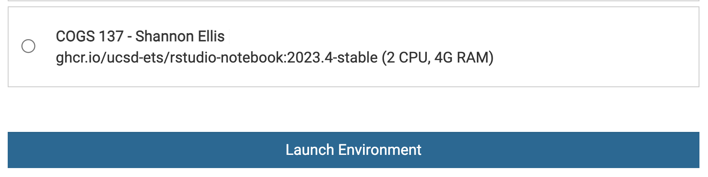
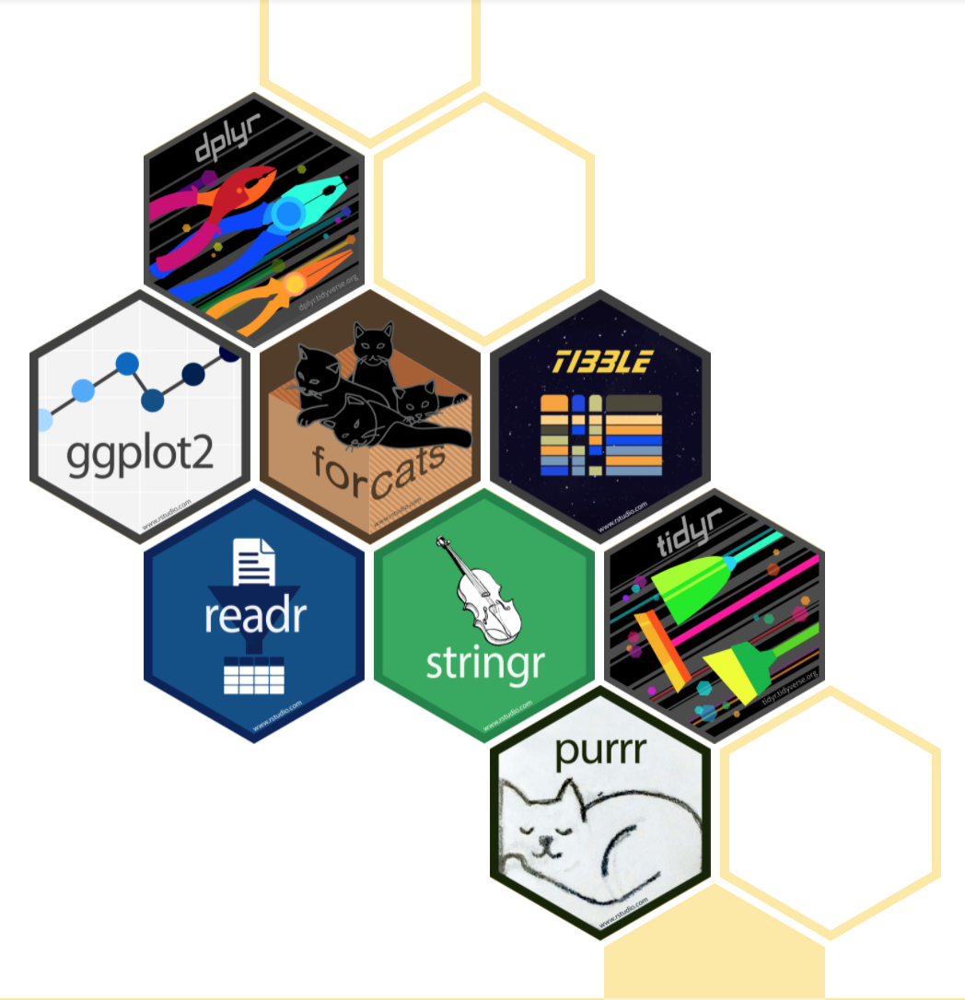

Welcome to COGS 137
Lecture 00
Welcome to COGS 137!
Practical Data Science in R
Please take one green sticky and one pink sticky as they come around. If you’re able, try and save these. We’ll use them most classes. (But, I’ll always have extra!)
Agenda
- Describe what this class is
- Describe how the class will run
- Go over the tooling for this course: R, RStudio, GitHub
What is R?
: R is a statistical programming language.
While R has most/all of the functionality of YFPL (your favorite programming language), it was designed for the specific use of analyzing data.
What is data science?
: Data science is the scientific process of using data to answer interesting questions and/or solve important problems.
Practical Data Science in R
- Program at the introductory level in the R statistical programming language
- Employ the tidyverse suite of packages to interact with, wrangle, visualize, and model data
- Explain & apply statistical concepts (estimation, linear regression, logistic regression, etc.) for data analysis
- Communicate data science projects through effective visualization, oral presentation, and written reports
Who am I?
Shannon Ellis: Associate Teaching Professor, Mom & wife, volleyball-obsessed, and baking & cooking lover
sellis@ucsd.edu
shannon-ellis.com
CSB 002
Tu/Th 2-3:20PM (Lab: Fri 2-2:50 (RWAC 0103) or Mon 5-5:50 (DIB 121))
Course Staff
| Quirine (Q) van-Engen (TA) | Eric Song (IA) |
|---|---|
What is this course?
Everything you want to know about the course, and everything you will need for the course will be posted at: https://cogs137-fa24.github.io/cogs137-fa24/
- Is this an intro CS course? No.
- Will we be doing computing? Yes.
- What computing language will we learn? R.
- Is this an intro stats course? No.
- Will we be doing stats? Yes.
- Are there any prerequisites? Yes, an intro statistics course!
So…I don’t have to know how to program already?

Nope! The first few weeks of the course will be all about getting comfortable using the R programming language!
After that, we’ll focus on delving into interesting statistical analyses through case studies.
Course Structure and Policies
The General Plan
- Learn R & the tidyverse
- Use interesting case studies to do so
- Do a project for your portfolio
- w/ a focus on communication and group work
. . .
Note: This course has historically been back-loaded, as that’s when group work has happened historically. I’ve tried to fix that this quarter by teaching from case studies from the beginning.
The Nitty Gritty
Class Meetings
- Interactive
- Lectures & lots of learn-by-doing
- Bring your laptop to class every day
In-person, synchronous learning
- I will be teaching in person.
- Lectures and lab will be podcast.
- Attendance will be incentivized using a daily participation survey.
- If you’re not feeling well, please stay home. I will do the same.
The (Dreaded) Waitlist
- Course enrollment is supposed to be 70 for this course
- There are 100 people currently enrolled
- I don’t control the waitlist (cogsadvising@ucsd.edu does)
- I don’t anticipate students being enrolled off of the waitlist (will be dependent on students dropping)
Lab & Office Hours
- Office hours begin Friday** week 1
- Prof: Tu: 11A-12P (drop-in); W 10-11A (10 min slots; appt.)
- Lab begins week 1 (next Friday)
- it’s not in a computer lab, so you’ll need to bring your own
- details about labs covered on Tues and in lab
- labs will always be released by Th night and due the following Th
- I will hang out after class today for questions/concerns from students
Course Materials
- Textbooks are free and available online
- Course platforms:
- Website : schedule, policies, due dates, etc.
- GitHub : retrieving assignments, labs, homework, etc.
- datahub : completing assignments, labs, homework, etc.
- Canvas : grades, course-specific links
- TBD : Q&A
Which Q&A Platform?
Q: Which Q&A Platform should we use this quarter? Discuss with your neighbor!
A: Piazza, ClassQuestion, Slack, Canvas? Something else?
Put a green sticky on the front of your computer when you’re done discussing. Put a pink if you have a question.
Diversity & Inclusion:
Goal: every student be well-served by this course
. . .
Philosophy: The diversity of students in this class is a huge asset to our learning community; our differences provide opportunities for learning and understanding.
. . .
Plan: Present course materials that are conscious of and respectful to diversity (gender identity, sexuality, disability, age, socioeconomic status, ethnicity, race, nationality, religion, politics, and culture)
. . .
But… if I ever fall short or if you ever have suggestions for improvement, please do share with me! There is also an anonymous Google Form if you’re more comfortable there.
A new-ish course!
- Offered 3x previously…but changes significantly each time
- If something doesn’t make sense, tell me!
- If you’ve got feedback/suggestions, I’m all ears!
Changes since last iteration
(based on feedback):
- no midterm
- case studies from beginning
- more focus on case studies/expectations
- more examples of effective communication
- lab focused changed
- more time for completing labs
- removed super-structured labs
- improved final project
- peer feedback
- checkpoints on final project
- more in-class stuff/time
How to get help
- Lab
- Office Hours
- Q&A
Q&A
A few (Q&A) guidelines:
1. No duplicates.
2. Public posts are best.
3. Posts should include your question, what you've tried so far, & resources used.
4. Helping others is encouraged.
5. No assignment code in public posts.
6. We're not robots. The R Community
The R Community

Artwork by @allison_horst
Academic integrity
Don’t cheat.
. . .
Teamwork is allowed, but you should be able to answer “Yes” to each of the following:
- Can I explain each piece of code and each analysis carried out in what I’m submitting?
- Could I reproduce this code/analysis on my own?
. . .
The Internet (including LLMS/ChatGPT) is a great resource. Cite your sources.
When To (Can I) Use ChatGPT/LLMs?
For anything in this course.
How To Use ChatGPT/LLMs
Probably never first or right away.
. . .
To learn: Think first. Try first. Then use external resources.
. . .
Always read/think about/understand the output.
ChatGPT: What to Avoid
- Over-reliance (thwarts learning)
- Having to look everything up (wastes time)
- Leaving tasks to the last minute (can lead to bad decisions/academic integrity issues)
- Taking the output without thinking (thwarts learning; limits critical thinking practice)
- Using it right away for brainstorming ideas (limits ideas generated)
Course components:
- Labs (7): Individual submission; graded on effort
- Homework (3): Individual submission; graded on correctness
- Case Studies (2): Team submission, technical analysis report + general communication
- Final Project (1) : Team submission, due Tues of finals week w/ checkpoints prior
Grading
Your final grade will be comprised of the following:
| Assignment (#) | % of grade |
|---|---|
| Labs (7) | 21% (3pt each) |
| Homework (3) | 24% (8pt each) |
| Case Study Projects* (2) | 30% (15pt each) |
| Final Project Proposal* (1) | 3% |
| Peer Review* (1) | 3% |
| Final Report* (1) | 11% |
| Final Presentation* (1) | 4% |
| Team Evaluation Surveys (3) | 3% (1pt each) |
Late/missed work policy
Homework and case study projects: accepted up to 3 days (72 hours) after the assigned deadline for a 25% deduction
No late deadlines for labs or the final project
. . .
Note: Prof Ellis is a reasonable person; reach out to her if you have an extenuating circumstance at any point in the quarter.
Tooling
Datahub
Datahub is a platform hosted by UCSD that gives students access to computational resources.
This means that while you’ll be typing on your keyboard, you’ll be using UCSD’s computers in this class.
Website: https://datahub.ucsd.edu/
. . .
Launch Environment
When working on “stuff” for this course, select the COGS 137 environment.

Datahub Usage
Q: Do I have to use datahub?
A: Nope. You could download and install all the packages we use and complete the course locally! However, many packages have already been installed for you on datahub, so it will be a tiny bit more work up front…but you won’t be dependent on the internet/datahub!
Toolkit

Scriptability \(\rightarrow\) R
Literate programming (code, narrative, output in one place) \(\rightarrow\) R Markdown
Version control \(\rightarrow\) Git / GitHub
The Internet (Google/ChatGPT/etc.)
R and RStudio
R & RStudio
- R is a statistical programming language
- RStudio is a convenient interface for R (an integreated development environment, IDE)
Concepts introduced:
- Console
- Using R as a calculator
- Environment
- Loading and viewing a data frame
- Accessing a variable in a data frame
- R functions
Your Turn
- Login to datahub
- Carry out a mathematical operation in the console
- View the
airqualitydataframe - Access a column from the
airqualitydataframe - Calculate the median for one of the numeric columns
Put a green sticky on the front of your computer when you’re done. Put a pink if you want help/have a question.
- Packages are the fundamental units of reproducible R code. They include reusable R functions, the documentation that describes how to use them, and sample data 1
- As of Sept 2024, there are ~21,000 R packages available on CRAN (the Comprehensive R Archive Network)2
- We’re going to work with a small (but important) subset of these!
What is the Tidyverse?

- The tidyverse is an opinionated collection of R packages designed for data science.
- All packages share an underlying philosophy and a common syntax.
RStudio Projects3
- Built-in functionality to keep all files for a single project organized
R Markdown
- Fully reproducible reports – each time you knit, the document is executed from top to bottom
- Simple markdown syntax for text
- Code goes in chunks, defined by three backticks, narrative goes outside of chunks
R Markdown tips
Keep the R Markdown cheat sheet and Markdown Quick Reference (Help -> Markdown Quick Reference) handy, we’ll refer to it often as the course progresses
The workspace of your R Markdown document is separate from the Console
How will we use R Markdown?
- Every lab / case study / project / homework / notes / etc. is an R Markdown document
- You’ll always have a template R Markdown document to start with
- The amount of scaffolding in the template will decrease over the quarter
Collaboration: Git & GitHub
- The statistical programming language we’ll use is R
- The software we use to interface with R is RStudio
- But how do I get you the course materials that you can build on for your assignments?
- I’m not going to email you documents, that would be a mess!
Version control
- We introduced GitHub as a platform for collaboration
- But it’s much more than that…
- It’s actually designed for version control
Versioning

Versioning
with human readable messages

Why do we need version control?

Git and GitHub tips
- Git is a version control system – like “Track Changes” feature Google Docs…but optimized for code. GitHub is the home for your Git-based projects on the internet – like Drive with additional features for code.
. . .
- There are millions of git commands – ok, that’s an exaggeration, but there are a lot of them – and very few people know them all. 99% of the time you will use git to add, commit, push, and pull.
. . .
- We will be doing Git things and interfacing with GitHub through RStudio, but if you google for help you might come across methods for doing these things in the command line – skip that and move on to the next resource unless you feel comfortable trying it out.
Resource: happygitwithr.com: book for working with git in R; Some content is beyond the scope of this course, but it’s a good resource
Let’s take a tour – Git / GitHub
We’ll cover this time permitting, you’ll see it again in lab next week
Concepts introduced:
- Connect an R project to Github repository
- Working with a local and remote repository
- Committing, Pushing and Pulling
There is a bit more of GitHub that we’ll use in this class, but for today this is enough.
Getting Help
- Trying things out
- Undersetanding Documentation
- Using ChatGPT/LLMs
Documentation
Consider ggplot2 (a package we’ll learn a lot)
- Official documentation (CRAN): https://cran.r-project.org/web/packages/ggplot2/index.html
- Code (Github): https://github.com/tidyverse/ggplot2
- Documentation: https://ggplot2.tidyverse.org/reference/index.html
- Specific Function: https://ggplot2.tidyverse.org/reference/geom_point.html
ChatGPT: What it could look like
Imagine: You’ve been asked to carry out a number of wrangling operations on a dataset and make a plot…
Additional help
- classmates
- course staff (OH, Q&A, class, lab)
Recap
Can you answer these questions?
- What is R vs RStudio?
- What are RStudio Projects?
- What is version control, and why do we care?
- What is git vs GitHub (and do I need to care)?
Additional git Resources
Version Control (git and GitHub):
- Getting Started with git
- GitHub Guide
- GitHub Desktop App Tutorial
- Git Command Line Resource
- Using
gitfrom the command line- Installing and using
git(Part 1), by COGS 108 TA Ganesh (youtube, 22min tutorial) - merge conflicts and branching (Part 2), by IA Shubham Kulkarni (youtube, 8min tutorial)
- Installing and using
- Using
gitwith GitHub Desktop, by COGS 108 TA Sidharth Suresh (youtube, 13min tutorial) - GIT & GITHUB TUTORIAL, from edureka!
- with notes from COGS 18/108 TA Holly(Yueying) Dong
Slides to PDF
- Toggle into Print View using the Esc key (or using the Navigation Menu)
- Open the in-browser print dialog (CTRL/CMD+P).
- Change the Destination setting to Save as PDF.
- Change the Layout to Landscape.
- Change the Margins to None.
- Enable the Background graphics option.
- Click Save 🎉
Instructions from quarto documentation
Students
Who’s in this class?
roster <- read_sheet('1ALPAaDU6-GEoxwq3Q5WMGsqvbFoCw4jGDuz0C_VtqqM')
ggplot(roster, aes(x = College)) +
geom_bar() +
labs(title = "COGS 137") +
theme_bw(base_size = 14) +
theme(plot.title.position = "plot")Note: This code will not run for you because you don’t have access to the roster for this course.
Who’s in this class?
roster |>
mutate(major = substr(Major, 1, 2)) |>
ggplot(aes(fct_infreq(major))) +
geom_bar() +
labs(title = "COGS 137",
x = "Major") +
theme_bw(base_size = 12) +
theme(plot.title.position = "plot")Who’s in this class?
roster |>
ggplot(aes(fct_relevel(Level, "JR", "SR", "VI"))) +
geom_bar() +
labs(title = "COGS 137",
x = "Level") +
theme_bw(base_size = 14) +
theme(plot.title.position = "plot")I’d like to know more!
(required)Student Survey - complete by Fri 10/4 at 11:59 PM.
This is required and completion will be used for CAA/#finaid. DO complete this even if you’re on the waitlist, please.
. . .
(optional) Daily Post-Lecture Feedback
- opportunity to reflect on learning
- opportunity to ask questions (I will read & answer.)
- opportunity for EC on final project
Note: Links to both surveys are also on Canvas. I will try to remind you at the end of lecture, but I’ll probably forget. Feel free to remind me/one another!
Footnotes
Wickham and Bryan, R Packages↩︎